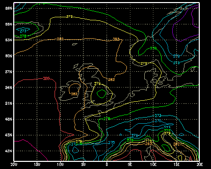
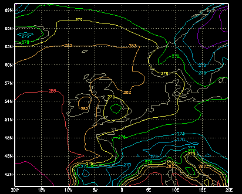

Introduction
Introduction Introduction
IntroductionInformation is also provided on the interpolation methods used to convert spectral data to a regular grid.
Only upper air data is stored in spectral form so the complementary surface data sets are provided on a Gaussian grid. The ECMWF data archived at the BADC is stored in two spectral resolutions, T159 and T106.
T159 resolution
The ERA-40 Re-analysis and Operational Analyses data are stored at a resolution of T159. The surface data for this data is provided on an N80 Reduced Gaussian grid.
T106 resolution
The ERA-15 Re-analysis project and Operational Analyses are both stored at a resolution of T106. The surface data for the ERA-15 data set is provided on an N80 Reduced Gaussian grid whilst the surface data for the Operational data set is on an N80 Full Gaussian grid.
There are two types of N80 Gaussian grid, the full and reduced Gaussian grid. The BADC holds ECMWF data stored on both types of Gaussian grid. The ECMWF web site contains information on the different types of Gaussian grid.
The N80 Full Gaussian grid is equivalent to a 1.125° grid along its longitudinal axis. This means that it has 320 grid points encircling the earth at each latitude. The grid is symmetric about the Equator with 80 latitudinal points in each hemisphere (see Table 1). The ECMWF surface Operational data held at the BADC is stored on an N80 Full Gaussian grid.
The N80 Reduced Gaussian grid is more complicated than the N80 Full Gaussian grid. The reduced grid has the same number of latitudinal grid points but the number of longitudinal grid points varies. The number of longitudinal grid points decreases from the equator to the poles as shown in Table 1, with 320 grid points around the equatorial region but only 18 grid points at 89.1416°N and 89.1416°S. This reduces storage time and computing resources when running the model. The ECMWF ERA-15 Re-analysis project and the ERA-40 Re-analysis project surface data is available in the N80 Reduced Gaussian grid.
Table 1. Grid points on the "full" and "reduced" N80 Gaussian grids.
| "Reduced" N80 Gaussian grid | "Full" N80 Gaussian grid | ||
| No. from pole | Latitude (degrees) | No. of points on a Lat. circle | No. of points on a Lat. circle |
| 1 | 89.1416 | 18 | 320 |
| 2 | 88.0294 | 25 | 320 |
| 3 | 86.9108 | 36 | 320 |
| 4 | 85.7906 | 40 | 320 |
| 5 | 84.6699 | 45 | 320 |
| 6 | 83.5489 | 54 | 320 |
| 7 | 82.4278 | 60 | 320 |
| 8 | 81.3066 | 64 | 320 |
| 9 | 80.1853 | 72 | 320 |
| 10 | 79.0640 | 72 | 320 |
| 11 | 77.9426 | 80 | 320 |
| 12 | 76.8212 | 90 | 320 |
| 13 | 75.6998 | 96 | 320 |
| 14 | 74.5784 | 100 | 320 |
| 15 | 73.4570 | 108 | 320 |
| 16 | 72.3356 | 120 | 320 |
| 17 | 71.2141 | 120 | 320 |
| 18 | 70.0927 | 128 | 320 |
| 19 | 68.9712 | 135 | 320 |
| 20 | 67.8498 | 144 | 320 |
| 21 | 66.7283 | 144 | 320 |
| 22 | 65.6069 | 150 | 320 |
| 23 | 64.4854 | 160 | 320 |
| 24 | 63.3639 | 160 | 320 |
| 25 | 62.2425 | 180 | 320 |
| 26 | 61.1210 | 180 | 320 |
| 27 | 59.9995 | 180 | 320 |
| 28 | 58.8780 | 192 | 320 |
| 29 | 57.7566 | 192 | 320 |
| 30 | 56.6351 | 200 | 320 |
| 31 | 55.5136 | 200 | 320 |
| 32 | 54.3921 | 216 | 320 |
| 33 | 53.2707 | 216 | 320 |
| 34 | 52.1492 | 216 | 320 |
| 35 | 51.0277 | 225 | 320 |
| 36 | 49.9062 | 225 | 320 |
| 37 | 48.7847 | 240 | 320 |
| 38 | 47.6632 | 240 | 320 |
| 39 | 46.5418 | 240 | 320 |
| 40 | 45.4203 | 256 | 320 |
| 41 | 44.2988 | 256 | 320 |
| 42 | 43.1773 | 256 | 320 |
| 43 | 42.0558 | 256 | 320 |
| 44 | 40.9343 | 288 | 320 |
| 45 | 39.8129 | 288 | 320 |
| 46 | 38.6914 | 288 | 320 |
| 47 | 37.5699 | 288 | 320 |
| 48 | 36.4484 | 288 | 320 |
| 49 | 35.3269 | 288 | 320 |
| 50 | 34.2054 | 288 | 320 |
| 51 | 33.0839 | 288 | 320 |
| 52 | 31.9624 | 288 | 320 |
| 53 | 30.8410 | 300 | 320 |
| 54 | 29.7195 | 300 | 320 |
| 55 | 28.5980 | 300 | 320 |
| 56 | 27.4765 | 300 | 320 |
| 57 | 26.3550 | 320 | 320 |
| 58 | 25.2335 | 320 | 320 |
| 59 | 24.1120 | 320 | 320 |
| 60 | 22.9905 | 320 | 320 |
| 61 | 21.8690 | 320 | 320 |
| 62 | 20.7476 | 320 | 320 |
| 63 | 19.6261 | 320 | 320 |
| 64 | 18.5046 | 320 | 320 |
| 65 | 17.3831 | 320 | 320 |
| 66 | 16.2616 | 320 | 320 |
| 67 | 15.1401 | 320 | 320 |
| 68 | 14.0186 | 320 | 320 |
| 69 | 12.8971 | 320 | 320 |
| 70 | 11.7756 | 320 | 320 |
| 71 | 10.6542 | 320 | 320 |
| 72 | 9.53270 | 320 | 320 |
| 73 | 8.41120 | 320 | 320 |
| 74 | 7.28970 | 320 | 320 |
| 75 | 6.16820 | 320 | 320 |
| 76 | 5.04670 | 320 | 320 |
| 77 | 3.92520 | 320 | 320 |
| 78 | 2.80370 | 320 | 320 |
| 79 | 1.68220 | 320 | 320 |
| 80 | 0.56070 | 320 | 320 |
Some of the ERA-40 Re-analysis data is archived on a regular 1° x 1° grid.
The ECMWF Operational data set is archived on a regular 1.125° x 1.125° grid for upper air model levels.
There are two ECMWF data sets held on a regular 2.5° x 2.5° grid. These are the ERA-15 Re-analysis and the Operational data sets. Both surface and upper air data (on pressure levels) are archived at this resolution.
The ERA-15 Re-analysis and Operational data was interpolated using bi-linear interpolation routines provided by the ECMWF (see the ECMWF web pages for details).
The same software and method of interpolation was used to convert ERA-40 data from the N80 Reduced Gaussian grid to a 1° x 1° regular grid are described here.
The BADC also makes the XCONV/CONVSH software package available from the BADC web pages. XCONV is Graphical User Interface that allows the user to visualise, subset and convert data files. CONVSH is a command line utility that allows access to the same features as XCONV via a shell prompt. Some users will download XCONV/CONVSH to interpolate data themselves.
XCONV/CONVSH also uses a form of bi-linear interpolation to convert from one grid resolution to another. Users of the data should be aware that data values will vary slightly depending on the method of interpolation applied. The bi-linear interpolation used for ERA-40 may produce occasional spurious results such as very slightly negative values in precipitation fields. Users who wish to access the data in its original model form should use the spectral and N80 Gaussian gridded data instead of the interpolated regular gridded data.
To ensure that the two interpolation methods did not produce significantly different output the BADC ran a comparison of data sets interpolated by the ECMWF routines and the XCONV/CONVSH package. Figures 1 and 2 show two data sets interpolated from one original spectral data set of temperature on model level 60 (nearest the Earth's surface) on 1 January 1989. The comparison shows that the interpolation routines produce almost identical results.
|
 Figure 1. Level 60 air temperatures (01/01/1989) interpolated by XCONV/CONVSH package. |
 Figure 2. Level 60 air temperatures (01/01/1989) interpolated by ECMWF routines. |
The difference between the two interpolated data sets was less than 0.0012K (around 0.0005%) throughout the globe. This confirms that the there is minimal difference between the XCONV/CONVSH interpolation routine and the ECMWF's own interpolation routines.